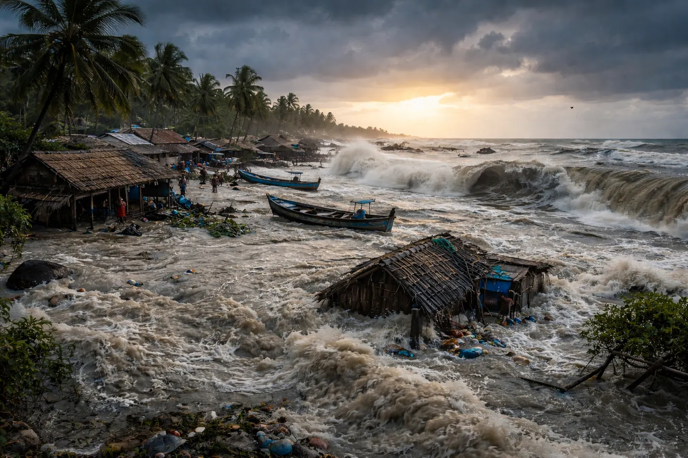
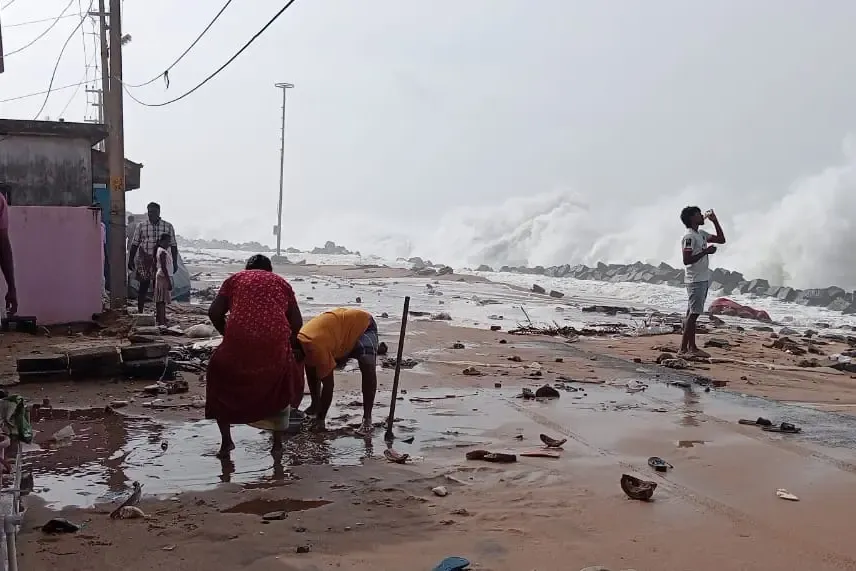
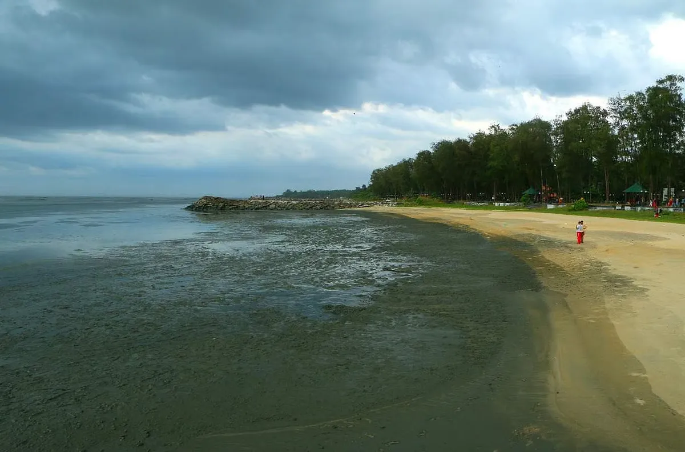

ഏകദേശം 600 കിലോമീറ്റർ നീളത്തിൽ കടൽത്തീരമുള്ള കേരളത്തിൽ, കടലുമായി ബന്ധപ്പെട്ട ദുരന്തങ്ങളും നാശനഷ്ടങ്ങളും സുപരിചിതമാണ്. വർഷാവർഷം മഴക്കാലത്തോടനുബന്ധിച്ചുണ്ടാകുന്ന കടൽക്ഷോഭം, അതിന്റെ ഫലമായി വീടുകൾ തകരുന്നതും മത്സ്യത്തൊഴിലാളികൾ വീട് മാറിപ്പോകേണ്ടിവരുന്നതും പോലുള്ള ദുരിതങ്ങൾ നമുക്ക് പരിചയമുള്ളതാണ്. 2017-ൽ വീശിയടിച്ച ഓഖി പോലുള്ള ചുഴലിക്കാറ്റുകൾ ഉണ്ടാക്കിയ നാശനഷ്ടങ്ങളും ജീവഹാനികളും, 2004 ഡിസംബർ 26-നുണ്ടായ സുനാമി ജനിപ്പിച്ച ഭയപ്പെടുത്തുന്നതും വേദനിപ്പിക്കുന്നതുമായ ഓർമകളും അങ്ങനെ പലതും...
എന്നാൽ, ഈ ദുരന്തങ്ങളുടെ ഒരു പ്രത്യേകത, അവ ഏറിയോ കുറഞ്ഞോ ലോകത്തിന്റെ പല ഭാഗങ്ങളിലും ഇന്ത്യയുടെ മറ്റു തീരപ്രദേശങ്ങളിലും സംഭവിക്കാറുണ്ട് എന്നതാണ്. പക്ഷേ, മറ്റു സ്ഥലങ്ങളിൽ അധികം കേൾക്കാത്തതും നമ്മുടെ വാർത്താമാധ്യമങ്ങൾ വളരെ പ്രാധാന്യത്തോടെ റിപ്പോർട്ട് ചെയ്യുന്നതുമായ ഒരു പ്രതിഭാസമാണ് കേരളതീരത്തെ കള്ളക്കടൽ. കടലുമായി ബന്ധപ്പെട്ട ദുരന്തങ്ങളുടെ മുന്നറിയിപ്പുകളും മറ്റു സേവനങ്ങളും നൽകുന്ന ഹൈദരാബാദിലെ ഇൻകോയിസ് (INCOIS), കേരളതീരത്തെ കള്ളക്കടലിനെക്കുറിച്ച് പ്രത്യേക മുന്നറിയിപ്പ്ക്കുറിപ്പുകൾ ഇറക്കാറുണ്ട്. ഇതിൽ നിന്ന് തന്നെ അത് എത്രത്തോളം പ്രാധാന്യം അർഹിക്കുന്നത് ആണെന്ന് മനസ്സിലാക്കാമല്ലോ.
എന്നാൽ, എന്താണ് കള്ളക്കടൽ? അത് എന്തുകൊണ്ടാണ് കേരളതീരത്ത് മാത്രം ഉണ്ടാകുന്നത്? എന്തുകൊണ്ട് മറ്റു സ്ഥലങ്ങളിൽ ഇത് സംഭവിക്കുന്നതായി ആരും പറയുന്നത് കേൾക്കുന്നില്ല? ഇങ്ങനെ ഒരുപാട് ചോദ്യങ്ങൾ ഉണ്ട്. ഇവയിൽ പലതിനും ഇന്നും പൂർണമായ വിശദീകരണം കണ്ടെത്തിയിട്ടുമില്ല. ഇതുവരെ പല ഗവേഷകരും കള്ളക്കടലിനെക്കുറിച്ച് ധാരാളം പഠനങ്ങൾ നടത്തിയിട്ടുണ്ട്. അവയെന്തൊക്കെയാണെന്നും, അതിലൂടെ നമുക്ക് ലഭിച്ച അറിവുകൾ എന്തൊക്കെയാണെന്നും നമുക്ക് നോക്കാം.

കള്ളക്കടൽ എന്ന വാക്ക് വളരെക്കാലം മുമ്പുതന്നെ കേരളതീരത്തെ മത്സ്യത്തൊഴിലാളികൾക്കിടയിൽ പ്രചാരത്തിലുണ്ട്. കടൽ ഒരു കള്ളനെപ്പോലെ, യാതൊരു മുന്നറിയിപ്പുമില്ലാതെ കയറിവരുകയും മത്സ്യത്തൊഴിലാളികളുടെ മത്സ്യബന്ധന ഉപകരണങ്ങളും വീട്ടുപകരണങ്ങളും 'മോഷ്ടിച്ചുകൊണ്ടുപോകുകയും' ചെയ്യുന്നു എന്നാണ് ഈ വാക്കിന്റെ സാരം. അതായത്, മൺസൂൺ മാസങ്ങൾ (ജൂൺ മുതൽ സെപ്റ്റംബർ വരെ) ഒഴികെയുള്ള ശാന്തമായ കാലാവസ്ഥയിൽ, മത്സ്യത്തൊഴിലാളികൾ അവരുടെ വള്ളങ്ങളും മറ്റു ഉപകരണങ്ങളും കടൽത്തീരത്ത് സൂക്ഷിക്കാറുണ്ട്. കള്ളക്കടലിന്റെ സമയത്ത്, പ്രാദേശിക കാലാവസ്ഥയിൽ യാതൊരു മാറ്റവും കാണാതെ അപ്രതീക്ഷിതമായി കടൽ കയറുന്നു. ഇതുമൂലം, ഉപകരണങ്ങൾ സുരക്ഷിതസ്ഥാനത്തേക്ക് മാറ്റാൻ കഴിയാതെ അവ നഷ്ടപ്പെടുകയോ നാശമുണ്ടാകുകയോ ചെയ്യുന്നു.
കടലിന്റെ ഇത്തരമൊരു പെരുമാറ്റത്തെ സൂചിപ്പിക്കാൻ 'കള്ളക്കടൽ' എന്നല്ലാതെ മറ്റെന്തു പേരാണ് അനുയോജ്യം? അതുകൊണ്ടുതന്നെ, 2012-ൽ യുഎൻ സ്ഥാപനമായ യുനെസ്കോ (UNESCO) ഈ പദം അംഗീകരിച്ചു. ഇപ്പോൾ എല്ലാ ശാസ്ത്രീയ പഠനങ്ങളിലും ഈ വാക്ക് ഔദ്യോഗികമായി ഉപയോഗിക്കുന്നു.

കള്ളക്കടലും സുനാമിയും തമ്മിലുള്ള ബന്ധം എന്താണ്? സുനാമി ഉണ്ടാകുന്നത് വിദൂരസ്ഥലങ്ങളിലെ കടലിനടിയിലുള്ള ഭൂകമ്പങ്ങൾ കാരണമാണെന്ന് നമുക്കെല്ലാവർക്കും അറിയാം. അതുകൊണ്ടുതന്നെ, തീരദേശ ദിനാന്തരീക്ഷസ്ഥിതിൽ യാതൊരു മാറ്റവും കാണാതെതന്നെ സുനാമി തീരങ്ങളിൽ നാശനഷ്ടങ്ങൾ വിതയ്ക്കുന്നു. കള്ളക്കടൽ സുനാമിയോളം ആഴവും വ്യാപ്തിയും ഉള്ള നാശനഷ്ടങ്ങൾ ഉണ്ടാക്കുന്നില്ലെങ്കിലും, പ്രാദേശിക കാലാവസ്ഥയിൽ മുൻസൂചനകളില്ലാതെ സംഭവിക്കുന്നതിനാൽ, ഇതിനെ പലപ്പോഴും സുനാമിയായി തെറ്റിദ്ധരിക്കാറുണ്ട്.
ഇത്തരമൊരു കള്ളക്കടൽ പ്രതിഭാസമാണ് 2005 മെയ് മാസത്തിൽ കേരളത്തിന്റെ തെക്കുപടിഞ്ഞാറൻ തീരത്ത് സംഭവിച്ചത്. ഇതിന് ചിലമാസങ്ങൾക്ക് മുമ്പാണ് 2004 ഡിസംബർ 26-ന് ലോകത്തെ നടുക്കിയ സുനാമി ഉണ്ടായത്. ആ സുനാമി കേരളമടക്കം ഇന്ത്യൻ മഹാസമുദ്രത്തിലെ വിവിധ തീരപ്രദേശങ്ങളിൽ, വ്യാപകമായ ആൾനാശവും വസ്തുനാശവും വിതച്ചു. ആ ഭയം മനസ്സിൽ നിലനിന്നിരുന്നതിനാൽ, കേരളത്തിലെ തീരദേശവാസികളും മാധ്യമങ്ങളും അധികാരികളും പിന്നീടുള്ള കടൽമാറ്റങ്ങളെ വളരെ ശ്രദ്ധയോടെ സമീപിച്ചു. അതുകൊണ്ടുതന്നെ, 2005 മേയ് ലെ കള്ളക്കടൽ പ്രതിഭാസം വലിയ മാധ്യമശ്രദ്ധയും സമുദ്രഗവേഷണശ്രദ്ധയും ആകർഷിച്ചു. കള്ളക്കടലിനെ കുറിച്ച് ഇത് വരെ ഏറ്റവും കൂടുതൽ പഠനങ്ങൾ നടന്നിട്ടുള്ളതും 2005-ലെ ഈ സംഭവത്തെ ബന്ധപ്പെടുത്തി ആണ്.
2005-ൽ നടത്തിയ ഒരു പഠനം1 അനുസരിച്ച്, ഈ കള്ളക്കടൽ 2004 ഡിസംബർ 26-ലെ ഭൂകമ്പത്തിന്റെ തുടർചലനങ്ങൾ മൂലമുണ്ടായ ഒരു ചെറുസുനാമി (micro tsunami) ആണെന്ന് അവർ നിരീക്ഷിച്ചു. ഈ വാദത്തിന് അവർ ചൂണ്ടിക്കാട്ടിയ കാരണങ്ങൾ ഇവയാണ്: അന്നത്തെ സുനാമിക്ക് സമാനമായി ഈ കള്ളക്കടലിൽ തീരത്തു നിന്നും 100 മീറ്ററോളം അകലെ സ്ഥിതി ചെയ്യുന്ന TS കനാലിൽ വെള്ളപ്പൊക്കം ഉണ്ടാകുകയും, അതുപോലെ ആലപ്പുഴ തീരത്ത് 30 മുതൽ 50 മീറ്റർ വരെ ചെളിയടിയുകയും, കടലിനടിയിലെ കല്ലുകൾ തീരത്തേക്ക് അടിയുകയും ചെയ്തു.
എന്നാൽ, പിന്നാലെ വന്ന മറ്റൊരു പഠനം ഈ 'ചെറുസുനാമി'2 വാദത്തെ തള്ളിക്കളഞ്ഞു. അതിന്റെ പ്രധാന കാരണം, കള്ളക്കടലിനു കാരണമായെന്ന് പറഞ്ഞ ആഴക്കടലിലെ തുടർചലനത്തിന്റെ തീവ്രത റിക്ടർ സ്കെയിലിൽ 7.2-ന് താഴെയായിരുന്നു എന്നതാണ്. അത്തരമൊരു ഭൂചലനം സുനാമി സൃഷ്ടിക്കാൻ പര്യാപ്തമല്ലെന്ന് അവർ ചൂണ്ടിക്കാട്ടി.
എന്നാൽ, 2005-ൽ തന്നെ ഇറങ്ങിയ മറ്റൊരു പഠനം3 പറഞ്ഞത്, കള്ളക്കടൽ ഉണ്ടാകുന്നത് ഇന്ത്യൻ മഹാസമുദ്രത്തിന്റെ ദക്ഷിണാർധഗോളത്തിലുള്ള അതിശക്തമായ കാറ്റുകൾ കാരണമാണെന്നാണ്. പിന്നീട് വന്ന പഠനങ്ങളെല്ലാം ഈ വാദത്തെയാണ് പിന്താങ്ങിയത്4,5,6. കേരളത്തിൽനിന്ന് ആയിരക്കണക്കിന് കിലോമീറ്റർ ദൂരെയുള്ള ദക്ഷിണാർധഗോളത്തിലെ കാറ്റ് എങ്ങനെ കേരള തീരത്ത് നാശമുണ്ടാക്കുന്ന കള്ളക്കടൽ സൃഷ്ടിക്കുന്നു? അതിനെക്കുറിച്ച് ലഘുവായി വിശദീകരിക്കാം.
നിങ്ങൾ ഒരു വലിയ കുളം മനസ്സിൽ വിചാരിക്കുക. അതിൽ ഒരു ചെറിയ കല്ലിട്ടാൽ തരംഗങ്ങൾ ഉണ്ടാകില്ലേ? അവയുടെ ഉയരം, നീളം തുടങ്ങിയ അളവുകൾ ശ്രദ്ധിക്കുക. ഇനി വലിയൊരു കല്ലിട്ടാൽ, തരംഗങ്ങളുടെ ഉയരവും മറ്റു സ്വഭാവങ്ങളും മാറുന്നത് കാണാം. അവസാനം, നിങ്ങൾ തന്നെ കുളത്തിലേക്ക് ചാടിയാൽ, ഉണ്ടാകുന്ന തരംഗങ്ങളുടെ വലുപ്പം വളരെ കൂടുതലായിരിക്കും. ഇതിൽനിന്ന് മനസ്സിലാക്കാം: ഇടുന്ന വസ്തുവിന്റെ വലുപ്പം അനുസരിച്ച് തരംഗങ്ങളുടെ സ്വഭാവം മാറുന്നു. അതുമാത്രമല്ല, അവ എത്ര ദൂരം സഞ്ചരിക്കുമെന്നും എത്ര വേഗത്തിലെന്നും ഈ ഇടുന്ന വസ്തു തീരുമാനിക്കുന്നു.
കടലിലെ തിരമാലകളെ പ്രധാനമായും കാറ്റാണ് സൃഷ്ടിക്കുന്നത് എന്നറിയാമല്ലോ? മുകളിൽ പറഞ്ഞത് പോലെ, തിരമാലയുടെ സ്വഭാവം നിർണയിക്കുന്നത് കാറ്റിന്റെ വേഗത, എത്ര സമയം അത് വീശുന്നു, വെള്ളത്തിന്റെ എത്ര വിസ്താരത്തിലാണത് വീശുന്നത് തുടങ്ങിയവയാണ്. ഇനി ഇന്ത്യൻ മഹാസമുദ്രത്തിന്റെ ചിത്രം നോക്കുക. ഉത്തരാർധഗോളവുമായി താരതമ്യം ചെയ്യുമ്പോൾ, ദക്ഷിണാർധഗോളത്തിന് കൂടുതൽ വിശാലതയുണ്ട്. അവിടെ അതിശക്തമായ കാറ്റുകൾ ഏറക്കുറെ നിരന്തരം വീശിക്കൊണ്ടിരിക്കുന്നതിനാൽ, വലിയ തിരമാലകൾ സൃഷ്ടിക്കപ്പെടുന്നു. ഈ വലിയ തിരമാലകൾക്ക് ദീർഘദൂരം സഞ്ചരിക്കാനുമാകും.
ചില അനുകൂല സാഹചര്യങ്ങളിൽ ഈ തിരമാലകളാണ് കള്ളക്കടൽ ഉണ്ടാക്കുന്നത് എന്നാണ് ഇതുവരെയുള്ള പഠനങ്ങളിലൂടെ ഗവേഷകർ എത്തിച്ചേർന്ന നിഗമനം. നേരത്തെ പറഞ്ഞ INCOIS കള്ളക്കടൽ മുന്നറിയിപ്പുകൾ നൽകുന്നതും ഈ കാറ്റുകളെയും അവയുണ്ടാക്കുന്ന തിരമാലകളെയും വിശകലനം ചെയ്തുകൊണ്ടാണ്.
കള്ളക്കടൽ ഉണ്ടാക്കുന്നത് ദക്ഷിണാർധഗോളത്തിലെ തിരമാലകളാണെന്ന് ഇന്ന് ശാസ്ത്രസമൂഹം ഏറക്കുറെ അംഗീകരിച്ചിരിക്കുന്നു. എന്നാൽ, ഇത്തരം തിരമാലകൾ കേരള തീരത്ത് മാത്രമാണോ എത്തുന്നത്? ഒരിക്കലുമല്ല. പഠനങ്ങൾ പറയുന്നത്, ഇവ ഇന്ത്യയുടെ എല്ലാ തീരദേശങ്ങളിലും കാണാറുണ്ടെന്നാണ്.
നിങ്ങൾ ഏതെങ്കിലും കടൽതീരത്ത് മൺസൂൺ മാസങ്ങൾ ഒഴിവാക്കി, വളരെ ശാന്തമായ സമയത്ത് അതിരാവിലെ പോയി നോക്കിയാൽ, കടലിൽ ഏകദേശം തുല്യമായ ആവൃത്തിയോടെ തിരമാലകൾ വന്നടിക്കുന്നത് കാണാം. ഇത്തരം തിരമാലകളിൽ ഭൂരിഭാഗവും ദക്ഷിണാർധഗോളത്തിൽ നിന്നുള്ളവയാണ്. പക്ഷേ, ഇവയിൽ ചിലത് മാത്രം എന്തുകൊണ്ടാണ് കേരള തീരത്ത് കള്ളക്കടൽ ഉണ്ടാക്കുന്നത്? ബാക്കി തീരങ്ങളിൽ അത് ഉണ്ടാകുന്നില്ലേ? അതോ ഉണ്ടായാലും ശ്രദ്ധിക്കപ്പെടാതെ പോകുന്നതാണോ? ഇങ്ങനെ ചില ചോദ്യങ്ങൾ ഇപ്പോഴും നമ്മുടെ മുന്നിലുണ്ട്.
ചില പഠനങ്ങൾ പറയുന്നത്, കേരളം വളരെ തെക്ക് സ്ഥിതിചെയ്യുന്നതിനാൽ ഇത്തരം തിരമാലകൾക്ക് അവിടെ കൂടുതൽ ഊർജമുണ്ടാകുമെന്നാണ്4. എന്നാൽ, അത് മാത്രമല്ല കാരണം. പ്രാദേശിക ഘടകങ്ങളും ഇതിൽ പ്രധാന പങ്കുവഹിക്കുന്നു എന്ന് ചില പഠനങ്ങൾ കണ്ടെത്തിയിട്ടുണ്ട്6. ഉദാഹരണത്തിന്, തീരത്തിന്റെ കടൽനിരപ്പിൽ നിന്നുള്ള ഉയരം, വേലിയേറ്റ സമയം തുടങ്ങിയവ. എന്നിരുന്നാലും, ഇതിനെക്കുറിച്ച് കൂടുതൽ പഠനങ്ങൾ ഇനിയും ആവശ്യമാണ്.

ഇന്ന് വാർത്താ മാധ്യമങ്ങളിൽ കേരള തീരത്ത് കടൽ പെട്ടെന്ന് പിന്നോട്ടു വലിയുന്ന പ്രതിഭാസങ്ങളെക്കുറിച്ച് പലപ്പോഴും വാർത്തകൾ വരാറുണ്ട്. സുനാമിക്ക് മുമ്പും ചുഴലിക്കാറ്റ് സമയത്തുമൊക്കെ ഇത്തരം സംഭവങ്ങൾ ഉണ്ടായിട്ടുണ്ട്. എന്നാൽ, കേരള തീരത്തെ ഈ പ്രതിഭാസം അത്തരം ദുരന്തങ്ങളോട് ബന്ധപ്പെട്ടതല്ലാതെയും പലതവണ റിപ്പോർട്ട് ചെയ്യപ്പെട്ടിട്ടുണ്ട്. പലരും ഈ പ്രതിഭാസത്തെ കള്ളക്കടലുമായി ചേർത്തോ അല്ലാതെയോ സൂചിപ്പിക്കുന്നത് കാണാം. യഥാർഥത്തിൽ, ഈ കടൽ പിന്നോട്ടു വലിയുന്നതും നേരത്തെ ചർച്ച ചെയ്ത കള്ളക്കടലും തമ്മിൽ ബന്ധമുണ്ടോ? ഇതുവരെ നടന്ന പഠനങ്ങൾ നോക്കിയാൽ, അങ്ങനെയൊന്നു പറയാനായിട്ടില്ല എന്നു തന്നെ പറയാം.
വേലിയിറക്ക സമയത്ത് കടൽ പുറകിലോട്ടു വലിയുന്നതും വേലിയേറ്റ സമയത്ത് അത് മുന്നോട്ടു കയറുന്നതുമൊക്കെ സർവസാധാരണമാണല്ലോ. ഇത് പ്രത്യേകിച്ച് അമാവസി, പൗർണമി നാളുകളിൽ കൂടുതൽ പ്രകടമാകും. എന്നാൽ, ഇത്തരം സാധാരണ വേലിയേറ്റ-ഇറക്കങ്ങൾക്കിടയിലെ ചില ദിവസങ്ങളിൽ അസാധാരണമായ കടലിറക്കങ്ങൾ സംഭവിക്കാറുണ്ട്.
തീരദേശവാസികളുടെ അഭിപ്രായമനുസരിച്ച്, ഈ കടലിറക്കത്തിന് വേലിയേറ്റവുമായി ഒരു ബന്ധവുമില്ല എന്നത് ഏറെക്കുറെ ഉറപ്പാണ്. അതിനാൽ, ഇത് എങ്ങനെ സംഭവിക്കുന്നു എന്നത് ഇന്നും അജ്ഞാതമായി തുടരുന്നു.
എങ്കിലും, ഈ വിഷയത്തിൽ ശ്രദ്ധേയമായ ഒരു സംഭവം 2012 സെപ്റ്റംബറിൽ ആലപ്പുഴയിലും പരിസര പ്രദേശങ്ങളിലും ഉണ്ടായി. അന്ന് കടൽ ഏകദേശം 1 കിലോമീറ്ററോളം ഉള്ളിലേക്ക് വലിഞ്ഞുപോയി എന്ന് 'ദി ന്യൂ ഇന്ത്യൻ എക്സ്പ്രസ്സ്'7 പത്രം റിപ്പോർട്ട് ചെയ്തിരുന്നു. ഈ പ്രതിഭാസം സംഭവിക്കുന്ന സമയത്ത്, കൊച്ചിയിലെ സമുദ്രഗവേഷണസ്ഥാപനമായ സി.എം.എൽ.ആർ.ഇ. (CMLRE)-യുടെ ഗവേഷണ കപ്പലായ “സാഗർ സംപത (Sagar Sampatha)” കൊച്ചി തീരത്തുനിന്ന് ഏകദേശം 35 കിലോമീറ്റർ അകലെ ഉൾക്കടലിൽ പഠനം നടത്തുന്നുണ്ടായിരുന്നു8. കടൽ ഉള്ളിലേക്ക് വലിഞ്ഞിരുന്ന സമയത്തു അവർ കടൽ ജലത്തിൽ ചില അസാധാരണമായ മാറ്റങ്ങൾ കാണുകയുണ്ടായി എന്നാൽ തീരം പഴയ പോലെ ആയപ്പോൾ അതും പഴയ പോലെ ആകുകയും ചെയ്തു. ഈ അസാധാരണ മാറ്റത്തിന് ഒരുപക്ഷെ കടൽ വലിഞ്ഞതുമായി ബന്ധമുണ്ടാകാമെന്നു അവർ അഭിപ്രായപ്പെടുകയും ചെയ്തു. എന്നാൽ അതിൽ പൂർണമായ നിഗമനത്തിൽ എത്തി ചേരാൻ ഇന്നും കഴിഞ്ഞിട്ടില്ല.
ഒരു നിമിഷം ആലോചിച്ചു നോക്കൂ: ഈ കടൽ പിന്നോട്ട് വലിയുന്നതിന് (sea recession) കാരണമായ പ്രവർത്തനത്തിന്റെ നേർവിപരീതമായിക്കൂടേ കടൽ മുന്നോട്ട് കയറുന്ന കള്ളക്കടലിനും കാരണം? കൂടുതൽ പഠനങ്ങൾ നടത്താതെ നമുക്ക് ഇതിൽ കൂടുതൽ ഒന്നും പറയാൻ സാധ്യമല്ല.
ഇതുവരെ നടത്തിയ പഠനങ്ങളിൽ നിന്ന് കള്ളക്കടലിനെക്കുറിച്ച് നമുക്ക് ചില വിവരങ്ങൾ ലഭ്യമായിട്ടുണ്ടെങ്കിലും, ഈ പ്രതിഭാസത്തിന്റെ പല വശങ്ങളും ഇന്നും വ്യക്തമായി മനസ്സിലായിട്ടില്ല. ഉദാഹരണത്തിന്, ആദ്യ പഠനങ്ങളിൽ പറഞ്ഞിരിക്കുന്ന 2005-ൽ TS കനാലിൽ ഉണ്ടായ വെള്ളപ്പൊക്കത്തെയും അതുപോലെ 2012-ൽ കൊച്ചിയുടെ പുറംകടലിൽ കണ്ട അസാധാരണമായ മാറ്റങ്ങളെളെയും കുറിച്ച് കൂടുതലായി മനസിലാക്കേണ്ടതുണ്ട്. കള്ളക്കടൽ പോലുള്ള തീരപ്രദേശ പ്രതിഭാസങ്ങളെക്കുറിച്ച് പഠിക്കുന്നതിൽ ശാസ്ത്രജ്ഞർ നേരിടുന്ന ഏറ്റവും വലിയ വെല്ലുവിളികളിലൊന്ന് കടലിന്റെ തീരദേശത്തു നിന്നുമുള്ള വിവര (Data) ശേഖരണമാണ്. തീരത്തിനു സമീപം ഉപഗ്രഹങ്ങളിൽ നിന്നുള്ള വിവരങ്ങൾ കൂടുതലായി പിഴവുകൾ ഉണ്ടാക്കാൻ സാധ്യതയുള്ളതാണ് അതിനാൽ തന്നെ നിരീക്ഷണ ഉപകരണങ്ങൾ കടലിൽ സ്ഥാപിക്കേണ്ടതുണ്ട്. എന്നാൽ കടലിൽ ഉപയോഗിക്കുന്ന നിരീക്ഷണ ഉപകരണങ്ങൾ വളരെ ചെലവേറിയവവയാണ്. കൂടാതെ, തീരപ്രദേശത്ത് അവ നിക്ഷേപിക്കുമ്പോൾ മത്സ്യത്തൊഴിലാളികളുടെ വലയും മറ്റും ഉപകരണങ്ങളിൽ കുടുങ്ങി നശിക്കാനും തിരിച്ചു ഉപകരണങ്ങൾക്ക് കേടുപാടുകൾ സംഭവിക്കാനും ചിലപ്പോൾ നഷ്ടപ്പെടാൻ തന്നെയും സാധ്യത കൂടുതൽ ആണ്. കള്ളക്കടലിനെ കുറിച്ചുള്ള പഠനങ്ങളിലെ മറ്റൊരു വെല്ലുവിളി ഈ പ്രതിഭാസം എവിടെ, എപ്പോൾ സംഭവിക്കുന്നു എന്നത് കൃത്യമായി പറയാൻ പറ്റില്ല എന്നതാണ് . വളരെ പ്രാദേശികമായി മാത്രം ഇത് സംഭവിക്കുന്നതിനാൽ എവിടെ എപ്പോഴാണ് നിരീക്ഷണം നടത്തേണ്ടത് എന്നത് മുൻകൂട്ടി കണ്ടെത്തുക വളരെ ദുഷ്കരം ആണ്.
എന്നിരുന്നാലും, ഈ എല്ലാ വെല്ലുവിളികൾക്കിടയിലും പ്രതീക്ഷയാണ് നമ്മുക്ക് മുന്നോട്ടുപോകാനുള്ള ശക്തി. "പലനാൾ കള്ളൻ — ഒരു നാൾ പിടിയിൽ" എന്നല്ലേ പഴമൊഴി? കടലിന്റെ ഈ ‘കള്ളത്തരത്തെയും’ നാം ഒടുവിൽ മനസ്സിലാക്കി ചുഴലിക്കാറ്റ് ഒക്കെ പ്രവചിക്കുന്നത് പോലെ കൃത്യതയോടെ പ്രവചിക്കാൻ കഴിയുമെന്നും അതിലൂടെ തീരദേശവാസികൾക്ക് ഇതുണ്ടാക്കുന്ന ബുദ്ധിമുട്ടുകൾ ഒഴിവാക്കാനാകുമെന്നും നമുക്ക് പ്രതീക്ഷിക്കാം.
This article is also available at https://luca.co.in/swell-waves/